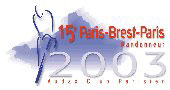

SOURCE
 Paris-Brest-Paris: Run every four years by the Audax Club Parisien, Paris-Brest-Paris (PBP) is a timed 1200-kilometer "randonnée" that goes from the French capital to the port city of Brest on the Atlantic, and returns along the same route. The maximum time limit to complete the distance is 90 hours. This year over 4000 entrants from around the globe who want to try their hand at this demanding test of human endurance and cycling ability. Entrants can ride PBP non-stop (except for having one's route book signed and stamped at checkpoints) in 42 hours, snatching food in mussette bags from support crews as the fastest riders do. Or, like most randonneurs, one can catch a little sleep at night and eat a few sit-down meals along the way. Support can only be given to riders at the checkpoints, which are spaced approximately 65-90 kilometers apart, so there are no following cars as in a normal road race. The vast majority of entrants don't use personal support crews and find whatever they need along the route. (Each checkpoint serves hot food around the clock and has some primitive sleeping accommodations.) The PBP route, while not mountainous, is quite hilly, and weather can play a major role in the outcome of the ride.
Begun in 1891 as a professional race, PBP gradually evolved into an amateur "randonnée" in the middle part of the 20th century. There were PBP professional races in 1891, 1901, 1911, 1921, 1931, 1948, and 1951. Though the starting fields of racers were always small, each PBP attracted some of the best endurance racers of the day and the winner of each PBP race was awarded great fame. Unlike the equally grueling Tour de France, with its sleep time between the daily stages, PBP was raced "all in one go" and this created huge interest among fans of cycle racing. It was thought that such a demanding race was too hard on the racers' bodies, so PBP was organized only once every ten years. However, proper preparation meant the entrants had to forego the very lucrative criterium season which follows each Tour de France, and interest among the pros declined until the racing version eventually died out.
Along with the racing field at the first PBPs, there was also a slower "tourist" category for enthusiasts who wanted to see if they could make the distance too. There were usually at least a hundred of these amateur riders at each PBP, but in 1931 the race organizers dropped this "unglamorous" group. The Audax Club Parisien stepped in to fill the void and there has been a PBP for randonneurs ever since. The 2003 PBP will be the 15th such event organized by the ACP. Successful completion of PBP means one's name is entered into the "Great Book" in Paris along with every other finisher going back to 1891, and a much-treasured medal is awarded.
PBP '03 information on the RUSA site.
PBP Info (from Randonneurs Ontario).
ACP PBP Info (in French) click "Paris-Brest-Paris" in menu.
PBP 1999 Route Map (from BC Randonneurs).
PBP Packing List (XLS from Audux Oz).
Info on cycling around Paris
Paris-Brest-Paris and the Randonneurs by Jan Heine (Bicycle Trader Spring/Summer 2000 Issue #39)
Villaines-la-Juhel Control Photos
Jean-Philippe Battu stories
PBP Parlour Game
Map of Brest PDF
1999 PBP elevation profile
BCR PBP elevation profile
Difficulties in measuring "hilliness"
Ride Reports and Photos from PBP 2003
Startand Prologue Photos
BCR Photos
Photos from an English guy with a disposable camera
PBP Photos
PBP Photos
PBP Elevation Profiles from Aussie Garry Armsworth (PDF)
Notable SIR Member PBP News The 2003 Paris-Brest-Paris tandem team of captain Jan Heine and stoker Jaye Haworth came first in the "mixed tandem" category! They rode a beautiful French 1948 René Herse tandem, and completed the 1225 km (765 miles) in 52:44 hours --Congratulations! (PDF press release). Ken Carter rode solo in under 60 hours! Read his story in the August/September 2003 newsletter.
PBP was a great success for SIR! We had 41 members in France for the 15th edition of this great event and 37 finishers. Congrats to all for showing fortitude and courage amidst long distances and copious amounts of pastries, jambon, frommage and hills...Find the finishing times of our PBP riders online here. Only the last three controls are listed and it's helpful to know what start time they had.
PBP Qualifying:
You can probably find a million different pieces of advice about qualifying, but here are two suggestions anyway:The first and most important rule is to be as prepared as possible. Carry what you might need, even at the expense of some speed. Better to have the rain jacket or extra insulating layer than to DNF (or worse) from hypothermia. Better to have reliable equipment and all the repair supplies that you might need (extra tubes, spare tire, secondary lighting system, zip ties, and the like) than to DNF from equipment failure. You can lighten your load and work on personal best times after you qualify.
Second suggestion is that if you feel like you can't continue at any point in the ride, you should endeavor to make it to the next control. Try drinking and/or eating to revive your energies. It's truly amazing how often a little (or, in some cases, a lot) of food can make a big difference. If that doesn't get you there, try a short nap.
For those of you planning to participate in PBP 2003 we suggest that the Seattle contingent gather for a picture at 2:45PM and sign up for the 15:00h (3:00PM) bike inspection on August 17th in St. Quentin en Yvelines!
As in previous years, Des Peres Travel can provide travel arrangements for PBP:
Claus Claussen
Des Peres Travel
Global Sports & Tours
236 Brougham Drive
O'Fallon, MO 63366 (USA)
Phone: (636) 300-1562
FAX: (636) 329-8177
dptravel@primary.net
PBP Entry Form Tips:
Here are some things to keep in mind when filling out the PBP entry form:1) Fill out the French form on the right-side of the centerfold of the May RUSA newsletter.
The form is going to a French office where the processor speaks and reads only French.Do NOT fill out the Sample English Entry Form on the left side of the centerfold. It is there for reference only.
2) Do not forget to write out the "oath" at the very bottom of the form.
3) Write out the "oath" in French. Do not write out the "oath" in English.
4) Include only one photograph. Two are no longer necessary, as in the past.
5) Include the four self-adhesive self-addressed mailing labels with "USA" on the fourth line.
Your rider kit and results kit will come directly from France.Type these labels if you can. Handwriting can be hard to decipher.
Four labels are plenty. Additional labels will be discarded.
6) Do not sent your PBP entry form via registered mail or certified mail. It just takes longer and I have to go to the post office to pick it up. If you want to know that your PBP entry form arrived, use the USPS tracking label system and send it via Priority Mail. Then you can track your package via www.usps.com
7) Do not expect confirmation from RUSA upon receipt of your PBP entry. You will receive an acknowledgement in July, and your name will appear in the August newsletter.
8) Fill out your PBP entry form clearly and legibly. Crossed out entries with corrections in the margins causes confusion.
9) Wait for your 600k brevet number - in order to fill in all the appropriate boxes.
If you do not have your 600k brevet number by June 25th, write the location and date that you did your 600k in the space provided on the form.Upon reaching France, your PBP entry will be processed after your 600k brevet is certified.
10) Do not, under any circumstances, send your PBP application to RUSA after July 1.
11) If you do not know your club affiliation or ACP code, go to www.rusa.org and look up your name under "Members." Your name, RUSA number, club affiliation and ACP code will be listed there. Use that same information on your PBP entry form.
Nom de Club = Seattle International Randonneurs
Code ACP du Club = 94701812) Write out your name exactly as it appears on the RUSA membership list, and how it appears on your brevet results pages. The ACP will cross-check names and spelling - so be consistent. Don't use your formal name, if you go by a nickname, and vice versa.
Thank you and best of luck,
Jennifer Wise
RUSA